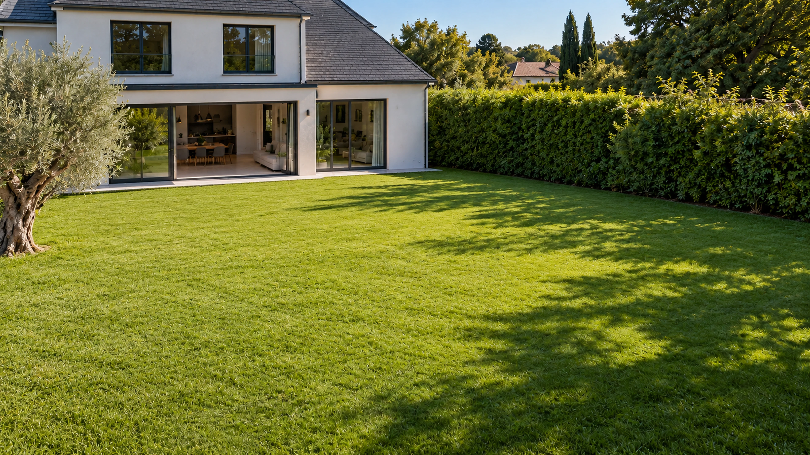

Piscines & extérieurs
Création, rénovation, équipements et aménagements qui prolongent la maison.
Découvrir les piscines & extérieurs →
Bâti, piscine & sécurité incendie
De l’étude à la pose, ABK orchestre les projets qui rendent vos espaces plus beaux, plus utiles et durablement conformes.
Nos expertises
Une équipe rigoureuse, des partenaires sélectionnés et une visibilité totale sur chaque étape.
Création, rénovation, équipements et aménagements qui prolongent la maison.
Découvrir les piscines & extérieurs →Des travaux maîtrisés, de la structure aux finitions, avec un interlocuteur unique.
Découvrir le bâti & la rénovation →Citernes souples Q.B.-CSTB, sortie latérale ou enterrée hors gel, installation clé en main.
Découvrir le pack incendie →Un suivi qui rassure
Un espace client clair pour valider les étapes, consulter les documents et échanger directement avec l’équipe projet.

Pose des margelles · prochaine étape
Notre méthode
Visite, besoins, contraintes et enveloppe : on dessine le bon projet avant de le chiffrer.
Un dossier lisible, des choix validés et un planning partagé avec tous les intervenants.
Des points d’avancement réguliers, des photos et une équipe disponible jusqu’à la réception.
Citerne souple incendie
Des réserves d’eau conçues pour répondre aux exigences des services de secours et s’intégrer à vos contraintes terrain.
Questions fréquentes
Le questionnaire de votre page métier permet de décrire vos envies, le lieu, les contraintes et votre calendrier. L’équipe pourra ensuite préciser les informations nécessaires à l’étude.
Le suivi est organisé avec l’équipe pour faire le point sur les étapes et les décisions. L’espace client en ligne est en préparation ; son accès sécurisé n’est pas encore activé.
L’étude porte sur le volume requis, les accès, les caractéristiques du sol, l’implantation de la prise d’aspiration et les prescriptions des services compétents.
Une rénovation globale ou partielle peut être étudiée. La page Bâti & rénovation détaille les étapes ; son questionnaire permet de préciser le bien et les travaux envisagés.
Ouvrez la page Piscines & extérieurs, Bâti & rénovation ou Pack incendie, puis cliquez sur « Faire une demande de devis ». Chaque questionnaire demande les informations propres à ce métier.
La commune, les dimensions envisagées, l’usage du bassin, les accès au terrain et vos souhaits d’équipement. Pour une rénovation, précisez aussi l’âge et l’état du bassin.
Oui. Les abords, les niveaux, les matériaux, les margelles et la circulation peuvent être inclus dans la réflexion. Le devis précise les prestations retenues.
Il dépend du périmètre, des études, des éventuelles autorisations, des approvisionnements, de l’accès et des conditions du chantier. Les échéances sont précisées après étude.
Le choix dépend de l’implantation et des prescriptions reçues. La sortie latérale donne un accès direct ; la sortie enterrée déporte le point d’aspiration et permet la protection hors gel des équipements prévus.
Un projet en tête ?